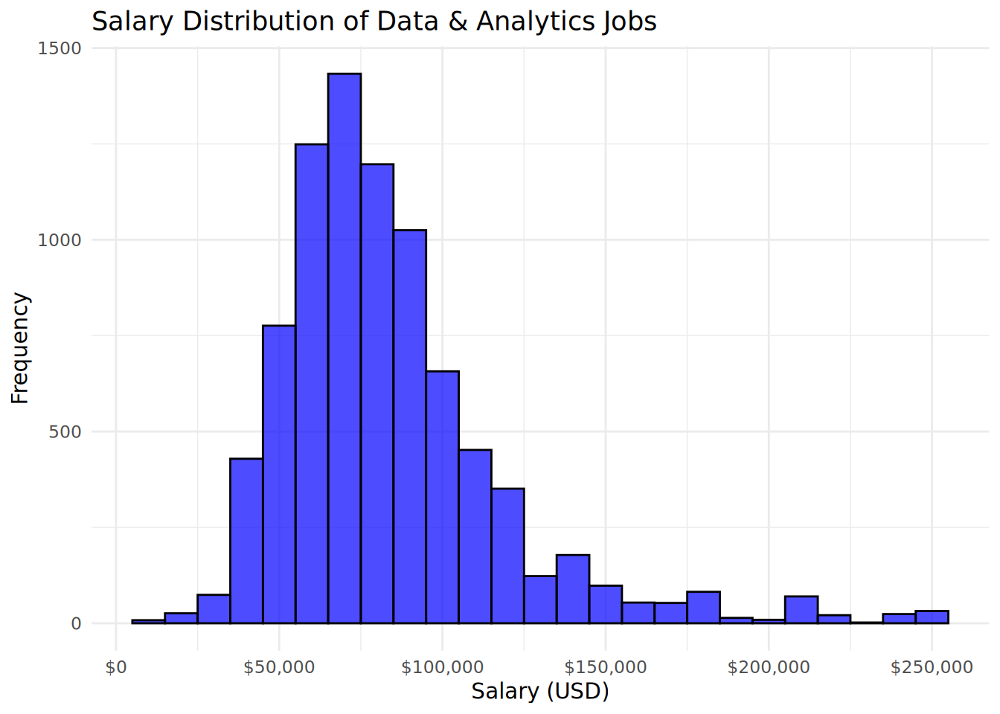
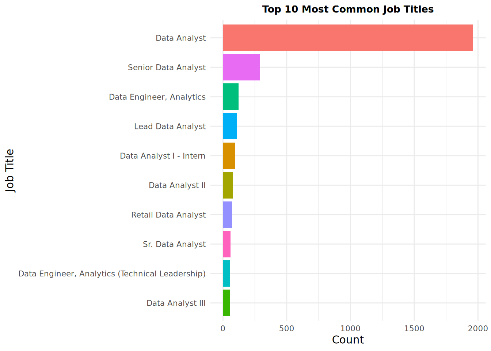
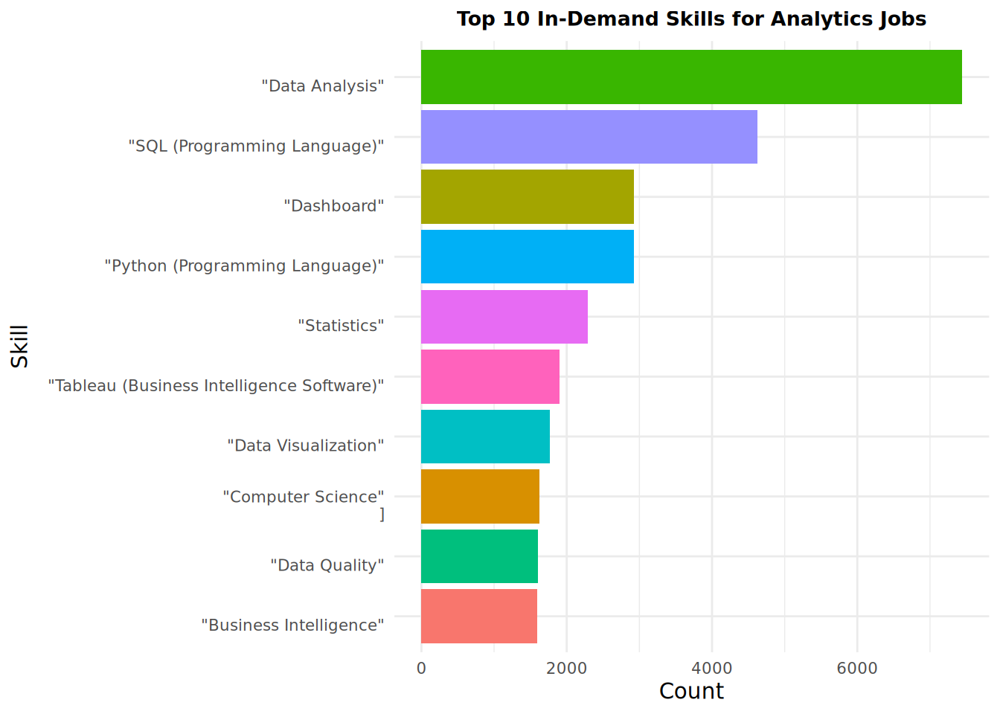

library(tidyverse)── Attaching core tidyverse packages ──────────────────────── tidyverse 2.0.0 ──
✔ dplyr 1.1.4 ✔ readr 2.1.5
✔ forcats 1.0.0 ✔ stringr 1.5.1
✔ ggplot2 3.5.1 ✔ tibble 3.2.1
✔ lubridate 1.9.4 ✔ tidyr 1.3.1
✔ purrr 1.0.4
── Conflicts ────────────────────────────────────────── tidyverse_conflicts() ──
✖ dplyr::filter() masks stats::filter()
✖ dplyr::lag() masks stats::lag()
ℹ Use the conflicted package (<http://conflicted.r-lib.org/>) to force all conflicts to become errorslibrary(ggplot2)
# Load the dataset
lightcast_data <- read_csv("/home/ubuntu/lightcast_job_postings.csv")Rows: 72476 Columns: 131
── Column specification ────────────────────────────────────────────────────────
Delimiter: ","
chr (87): ID, LAST_UPDATED_TIMESTAMP, SOURCE_TYPES, SOURCES, URL, ACTIVE_UR...
dbl (38): DUPLICATES, DURATION, MODELED_DURATION, COMPANY, MIN_EDULEVELS, M...
lgl (2): COMPANY_IS_STAFFING, IS_INTERNSHIP
date (4): LAST_UPDATED_DATE, POSTED, EXPIRED, MODELED_EXPIRED
ℹ Use `spec()` to retrieve the full column specification for this data.
ℹ Specify the column types or set `show_col_types = FALSE` to quiet this message.# Preview the first few rows
head(lightcast_data)# A tibble: 6 × 131
ID LAST_UPDATED_DATE LAST_UPDATED_TIMESTAMP DUPLICATES POSTED
<chr> <date> <chr> <dbl> <date>
1 1f57d95acf4dc6… 2024-09-06 2024-09-06 20:32:57.3… 0 2024-06-02
2 0cb072af26757b… 2024-08-02 2024-08-02 17:08:58.8… 0 2024-06-02
3 85318b12b3331f… 2024-09-06 2024-09-06 20:32:57.3… 1 2024-06-02
4 1b5c3941e54a18… 2024-09-06 2024-09-06 20:32:57.3… 1 2024-06-02
5 cb5ca25f02bdf2… 2024-06-19 2024-06-19 07:00:00.0… 0 2024-06-02
6 35a6cd2183d9fb… 2024-09-06 2024-09-06 20:32:57.3… 0 2024-06-02
# ℹ 126 more variables: EXPIRED <date>, DURATION <dbl>, SOURCE_TYPES <chr>,
# SOURCES <chr>, URL <chr>, ACTIVE_URLS <chr>, ACTIVE_SOURCES_INFO <chr>,
# TITLE_RAW <chr>, BODY <chr>, MODELED_EXPIRED <date>,
# MODELED_DURATION <dbl>, COMPANY <dbl>, COMPANY_NAME <chr>,
# COMPANY_RAW <chr>, COMPANY_IS_STAFFING <lgl>, EDUCATION_LEVELS <chr>,
# EDUCATION_LEVELS_NAME <chr>, MIN_EDULEVELS <dbl>, MIN_EDULEVELS_NAME <chr>,
# MAX_EDULEVELS <dbl>, MAX_EDULEVELS_NAME <chr>, EMPLOYMENT_TYPE <dbl>, …# Check column names
colnames(lightcast_data) [1] "ID" "LAST_UPDATED_DATE"
[3] "LAST_UPDATED_TIMESTAMP" "DUPLICATES"
[5] "POSTED" "EXPIRED"
[7] "DURATION" "SOURCE_TYPES"
[9] "SOURCES" "URL"
[11] "ACTIVE_URLS" "ACTIVE_SOURCES_INFO"
[13] "TITLE_RAW" "BODY"
[15] "MODELED_EXPIRED" "MODELED_DURATION"
[17] "COMPANY" "COMPANY_NAME"
[19] "COMPANY_RAW" "COMPANY_IS_STAFFING"
[21] "EDUCATION_LEVELS" "EDUCATION_LEVELS_NAME"
[23] "MIN_EDULEVELS" "MIN_EDULEVELS_NAME"
[25] "MAX_EDULEVELS" "MAX_EDULEVELS_NAME"
[27] "EMPLOYMENT_TYPE" "EMPLOYMENT_TYPE_NAME"
[29] "MIN_YEARS_EXPERIENCE" "MAX_YEARS_EXPERIENCE"
[31] "IS_INTERNSHIP" "SALARY"
[33] "REMOTE_TYPE" "REMOTE_TYPE_NAME"
[35] "ORIGINAL_PAY_PERIOD" "SALARY_TO"
[37] "SALARY_FROM" "LOCATION"
[39] "CITY" "CITY_NAME"
[41] "COUNTY" "COUNTY_NAME"
[43] "MSA" "MSA_NAME"
[45] "STATE" "STATE_NAME"
[47] "COUNTY_OUTGOING" "COUNTY_NAME_OUTGOING"
[49] "COUNTY_INCOMING" "COUNTY_NAME_INCOMING"
[51] "MSA_OUTGOING" "MSA_NAME_OUTGOING"
[53] "MSA_INCOMING" "MSA_NAME_INCOMING"
[55] "NAICS2" "NAICS2_NAME"
[57] "NAICS3" "NAICS3_NAME"
[59] "NAICS4" "NAICS4_NAME"
[61] "NAICS5" "NAICS5_NAME"
[63] "NAICS6" "NAICS6_NAME"
[65] "TITLE" "TITLE_NAME"
[67] "TITLE_CLEAN" "SKILLS"
[69] "SKILLS_NAME" "SPECIALIZED_SKILLS"
[71] "SPECIALIZED_SKILLS_NAME" "CERTIFICATIONS"
[73] "CERTIFICATIONS_NAME" "COMMON_SKILLS"
[75] "COMMON_SKILLS_NAME" "SOFTWARE_SKILLS"
[77] "SOFTWARE_SKILLS_NAME" "ONET"
[79] "ONET_NAME" "ONET_2019"
[81] "ONET_2019_NAME" "CIP6"
[83] "CIP6_NAME" "CIP4"
[85] "CIP4_NAME" "CIP2"
[87] "CIP2_NAME" "SOC_2021_2"
[89] "SOC_2021_2_NAME" "SOC_2021_3"
[91] "SOC_2021_3_NAME" "SOC_2021_4"
[93] "SOC_2021_4_NAME" "SOC_2021_5"
[95] "SOC_2021_5_NAME" "LOT_CAREER_AREA"
[97] "LOT_CAREER_AREA_NAME" "LOT_OCCUPATION"
[99] "LOT_OCCUPATION_NAME" "LOT_SPECIALIZED_OCCUPATION"
[101] "LOT_SPECIALIZED_OCCUPATION_NAME" "LOT_OCCUPATION_GROUP"
[103] "LOT_OCCUPATION_GROUP_NAME" "LOT_V6_SPECIALIZED_OCCUPATION"
[105] "LOT_V6_SPECIALIZED_OCCUPATION_NAME" "LOT_V6_OCCUPATION"
[107] "LOT_V6_OCCUPATION_NAME" "LOT_V6_OCCUPATION_GROUP"
[109] "LOT_V6_OCCUPATION_GROUP_NAME" "LOT_V6_CAREER_AREA"
[111] "LOT_V6_CAREER_AREA_NAME" "SOC_2"
[113] "SOC_2_NAME" "SOC_3"
[115] "SOC_3_NAME" "SOC_4"
[117] "SOC_4_NAME" "SOC_5"
[119] "SOC_5_NAME" "LIGHTCAST_SECTORS"
[121] "LIGHTCAST_SECTORS_NAME" "NAICS_2022_2"
[123] "NAICS_2022_2_NAME" "NAICS_2022_3"
[125] "NAICS_2022_3_NAME" "NAICS_2022_4"
[127] "NAICS_2022_4_NAME" "NAICS_2022_5"
[129] "NAICS_2022_5_NAME" "NAICS_2022_6"
[131] "NAICS_2022_6_NAME" # Only keep key fields
lightcast_cleaned <- lightcast_data %>%
select(job_title = TITLE_RAW, # Ensure column names match exactly
company = COMPANY,
location = CITY,
state = STATE,
salary = SALARY_FROM,
employment_type = EMPLOYMENT_TYPE,
posted_date = POSTED,
skills = SPECIALIZED_SKILLS_NAME,
certifications = CERTIFICATIONS)
head(lightcast_cleaned)# A tibble: 6 × 9
job_title company location state salary employment_type posted_date skills
<chr> <dbl> <chr> <dbl> <dbl> <dbl> <date> <chr>
1 Enterprise A… 8.95e5 RWwgRG9… 5 NA 1 2024-06-02 "[\n …
2 Oracle Consu… 1.33e5 QXVndXN… 23 NA 1 2024-06-02 "[\n …
3 Data Analyst 3.91e7 RGFsbGF… 48 NA 1 2024-06-02 "[\n …
4 Sr. Lead Dat… 3.76e7 UGhvZW5… 4 NA 1 2024-06-02 "[\n …
5 Comisiones d… 0 TW9kZXN… 6 35000 3 2024-06-02 "[]"
6 SR Lead Data… 2.23e6 W1Vua25… 5 94420 1 2024-06-02 "[\n …
# ℹ 1 more variable: certifications <chr># Save as CSV inside the 'data' folder
write_csv(lightcast_cleaned, "/home/ubuntu/ad688-employability-sp25A1-group7/data/lightcast_cleaned.csv")
# Define key words
keywords <- c("Data Scientist", "Machine Learning Engineer", "Business Analyst",
"AI Engineer", "Data Engineer", "ML Researcher", "Data Analyst")
# Filter jobs with relevant titles
analytics_jobs <- lightcast_cleaned %>%
filter(str_detect(job_title, paste(keywords, collapse = "|")))
# View the filtered dataset
head(analytics_jobs)# A tibble: 6 × 9
job_title company location state salary employment_type posted_date skills
<chr> <dbl> <chr> <dbl> <dbl> <dbl> <date> <chr>
1 Data Analyst 3.91e7 RGFsbGF… 48 NA 1 2024-06-02 "[\n …
2 SR Lead Data… 2.23e6 W1Vua25… 5 94420 1 2024-06-02 "[\n …
3 Talent Data … 4.49e7 U2NvdHR… 4 NA 1 2024-06-02 "[\n …
4 Data Analyst 3.91e7 RGF5dG9… 39 NA 1 2024-06-02 "[\n …
5 Data Analyst 1.21e7 UmlkZ2V… 6 91559 1 2024-06-02 "[\n …
6 Data Analyst 4.06e6 SG9ub2x… 15 NA 1 2024-06-02 "[\n …
# ℹ 1 more variable: certifications <chr># Check missing values
colSums(is.na(analytics_jobs)) job_title company location state salary
0 0 0 0 9595
employment_type posted_date skills certifications
0 0 0 0 # Remove rows with missing salaries or job titles
analytics_jobs <- analytics_jobs %>%
filter(!is.na(salary) & !is.na(job_title))
# Convert salary to numeric
analytics_jobs$salary <- as.numeric(analytics_jobs$salary)
write_csv(analytics_jobs, "/home/ubuntu/ad688-employability-sp25A1-group7/data/analytics_jobs.csv")
# Histogram of Salaries
ggplot(analytics_jobs, aes(x = salary)) +
geom_histogram(binwidth = 10000, fill = "blue", alpha = 0.7, color = "black") +
scale_x_continuous(labels = scales::dollar_format()) +
labs(title = "Salary Distribution of Data & Analytics Jobs",
x = "Salary (USD)",
y = "Frequency") +
theme_minimal()
ggsave("/home/ubuntu/ad688-employability-sp25A1-group7/figures/Salary_Distribution_of_Data&Analytics_Jobs.png")Saving 7 x 5 in image# Bar Chart for Job Counts
analytics_jobs %>%
count(job_title, sort = TRUE) %>%
top_n(10) %>%
ggplot(aes(x = reorder(job_title, n), y = n, fill = job_title)) +
geom_col() +
coord_flip() +
labs(title = "Top 10 Most Common Job Titles",
x = "Job Title",
y = "Count") +
theme_minimal() +
theme(
plot.title = element_text(size = 10, face = "bold", hjust = 0.5),
axis.text.y = element_text(size = 8, hjust = 1),
axis.text.x = element_text(size = 8, angle = 0, vjust = 1),
legend.position = "none")Selecting by n
ggsave("/home/ubuntu/ad688-employability-sp25A1-group7/figures/Top10_Most_Common_Job_Titles.png")Saving 7 x 5 in image# Bar Chart for Top Required Skills
analytics_jobs %>%
separate_rows(skills, sep = ",") %>% # Split multiple skills in one row
count(skills, sort = TRUE) %>%
top_n(10) %>%
ggplot(aes(x = reorder(skills, n), y = n, fill = skills)) +
geom_col() +
coord_flip() +
labs(title = "Top 10 In-Demand Skills for Analytics Jobs",
x = "Skill",
y = "Count") +
theme_minimal() +
theme(
plot.title = element_text(size = 10, face = "bold", hjust = 0.5),
axis.text.y = element_text(size = 8, hjust = 1),
axis.text.x = element_text(size = 8, angle = 0, vjust = 1),
legend.position = "none")Selecting by n
ggsave("/home/ubuntu/ad688-employability-sp25A1-group7/figures/Top10_InDemand_Skills_for_Analytics_Jobs.png", width = 18, height = 8, dpi = 300)